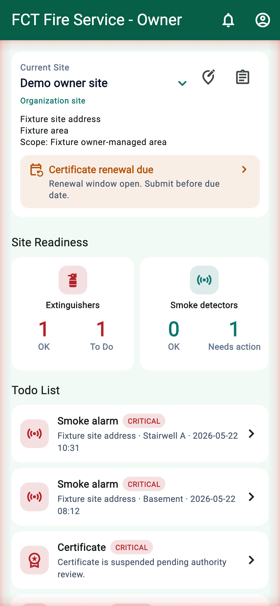
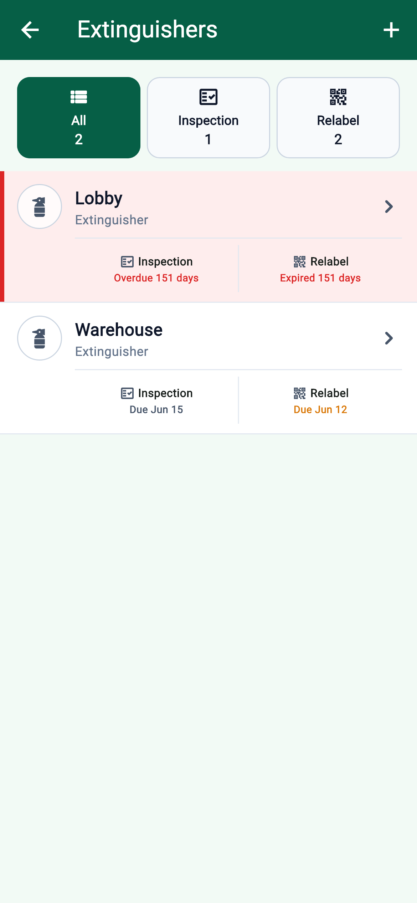
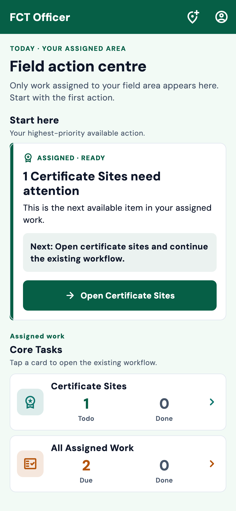
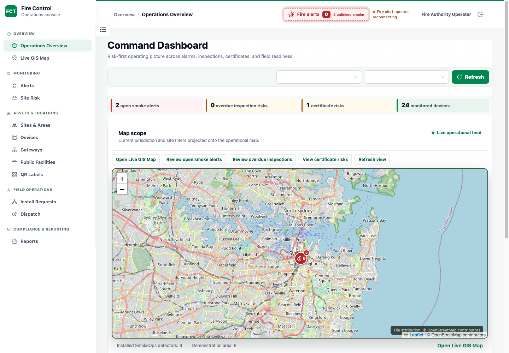

In this case 8 sections
FIRE EQUIPMENT MANAGEMENT / COMPANY PROJECT / 2026–PRESENT
Make the next
action clear.
Owners, inspectors and administrators need to carry the same work across different screens and responsibilities.
- My role
- Clarify requirements, review interactions and coordinate test/build handoffs.
- Team outcome
- Five-person team · Four-month platform delivery phase · Ongoing iteration.
The CTO initially estimated 22 people for comparable scope. This is a team delivery comparison, not a measured productivity result.

02 / REQUIREMENTS
Separate the person from the premises.
One owner can manage multiple sites; site classification belongs with the site.
Who signs in
Owner identity + access
Which premises
Equipment · Inspection · Certificate
Another premises
Its own equipment and work
Why this mattered
Overseas discussions distinguished site certification from the connected-device service. Duplicating personal or organisational site classification during account registration mixed two different concepts.
What I contributed
I prepared questions, proposed multi-site ownership and clarified account/site boundaries and installation responsibilities with the team.
Concept model reconstructed from requirements records. Site A and Site B are fictional.
03 / SERVICE JOURNEY
Design the handoff between roles.
A field action is only complete when the next person can understand its outcome.
Establish the site
Premises and equipment define the work.
Install + review progress
Accept → inspect → submit
Review + follow up
The next role can see the outcome.
Find the broken handoff
I questioned unreachable request paths, task acceptance that interrupted the next action, and field tasks that still appeared open elsewhere.
Keep responsibilities distinct
Installation and inspection are parallel work paths, not a required sequence. Emergency coordination has a separate admin workflow.
Business-level reconstruction, not an internal architecture or integration diagram.
04 / INTERACTION DECISIONS
Keep people in the task.
Acceptance should lead into field work, with status that explains what needs attention.
Observed friction
Acceptance sends people back
My requested direction
Continue from acceptance
Textual reconstruction of recorded review feedback and the requested direction. No historical UI or measured before/after result is claimed.
Make status specific
I requested concrete issue wording with consistent severity colours, rather than generic warning labels. Example copy direction: “Warning” → “Expires within 30 days”.
Keep familiar behaviour
I requested alignment of navigation, refresh, inputs and completion feedback across apps. This was interaction review, not a claim to have built a design system.
05 / SCOPE DECISION
Dispatch is not incident closure.
The first dispatch workflow should confirm the responding unit; incident end needs its own confirmation.
My product judgement
Trying the flow exposed unclear acceptance and completion. I challenged a long reporting sequence before dispatcher needs were established, and proposed a smaller first workflow.
What followed
The subsequent team specification separated dispatch-queue completion from incident-end confirmation. AI and engineering contributed detailed states, editing and implementation.
06 / MOBILE INTERFACES
Context. Priority. Next action.
Three accepted interfaces show the product context behind my cross-app review.
Select any image to inspect the full-resolution interface. No customer data is shown.


07 / ADMIN INTERFACE
Bring the operating picture together.
Use one overview to move from site-level risk to the next follow-up.

Public basemap © OpenStreetMap contributors. Sydney points and counts are fictional demonstration data.
08 / DELIVERY + REFLECTION
Turn a decision into a checkable next step.
My value is carrying product context through requirements, review and delivery with technical colleagues.
Clarify
Make the scope explicit
Prepare stakeholder questions; separate account, site and role responsibilities.
Review
Direct AI-assisted work
Review generated proposals and interfaces, challenge unnecessary scope and define the next acceptance check.
Coordinate
Keep delivery reviewable
Request operator guides and test steps; coordinate build handoffs and a known-working demonstration baseline.
The record supports team delivery and continued iteration. Hardware checks and human acceptance remain separate from automated or simulated checks; this case does not claim a completed production rollout.